Welcome to the fascinating world of Gradient Descent!
The algorithm that teaches machines to recognize patterns
📚 Quick Recap: What Are We Trying to Do?
Our Goal: Digit Recognition
We want our neural network to look at handwritten digits and correctly identify what number they represent.
The Challenge: Each digit can be written in countless different ways, but they should all be recognized as the same number!
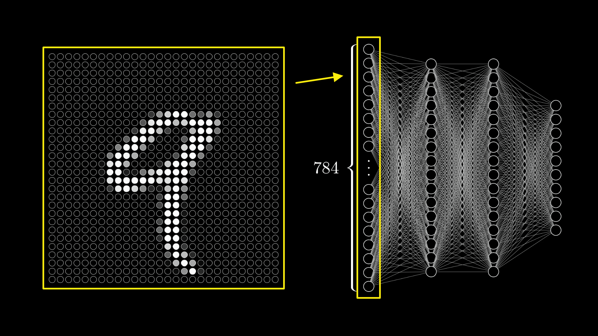
How It Works
Each 28×28 pixel image becomes 784 input values (one for each pixel's brightness).
These flow through layers of neurons, each with weights and biases, to produce 10 outputs (one for each digit 0-9).
🤔 The Big Question: How Does Learning Happen?
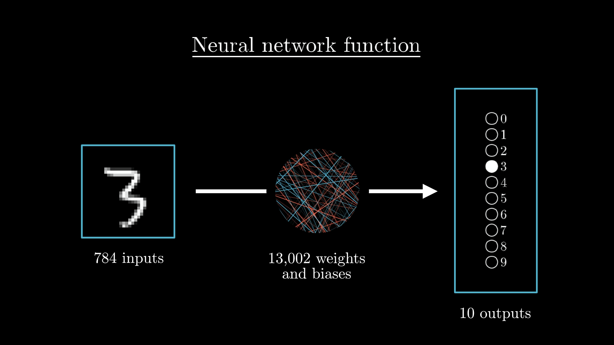
Our network has 13,002 parameters (weights and biases) that determine its behavior. Initially, these are just random numbers!
The key insight: Learning = Finding the right values for these 13,002 numbers
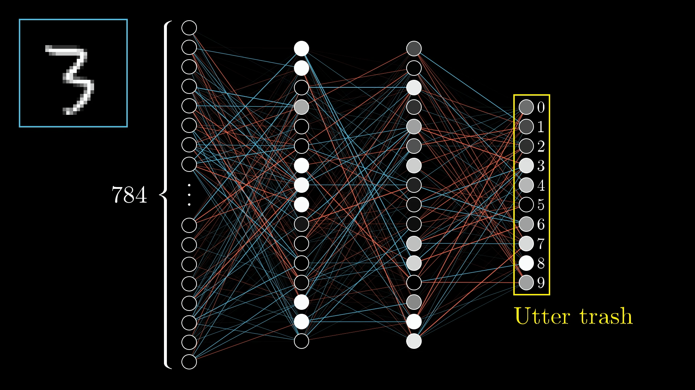
With random weights, our network produces "utter trash" 🗑️
💰 The Cost Function: Measuring How Bad We Are
To improve, we first need to measure how badly our network is performing. This is where the cost function comes in!
What's the cost of being wrong?
When we show our network a "3", we want the third output neuron to light up (value = 1) and all others to be dim (value = 0).
The cost measures how far we are from this ideal.
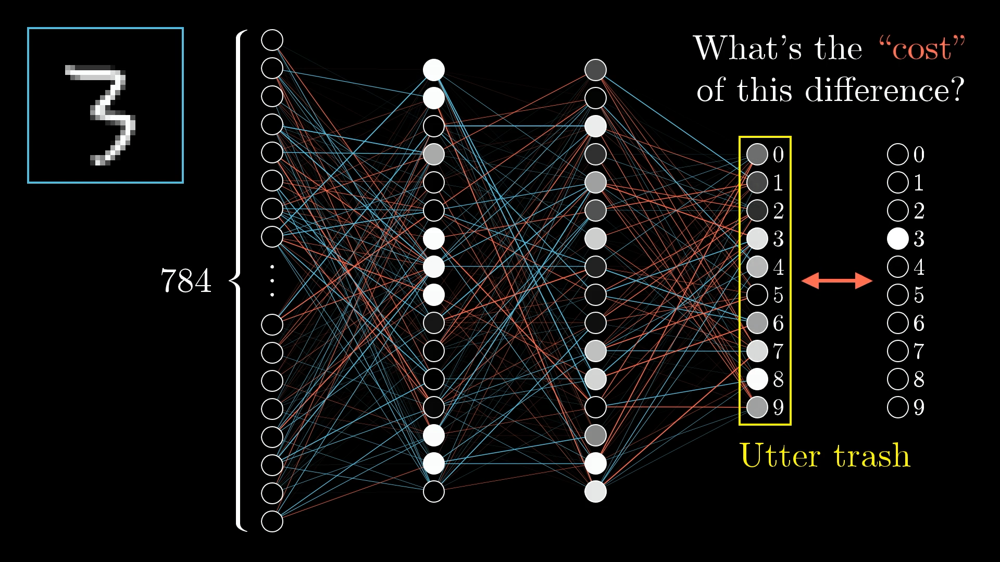
Cost = Σ (actual_output - desired_output)²
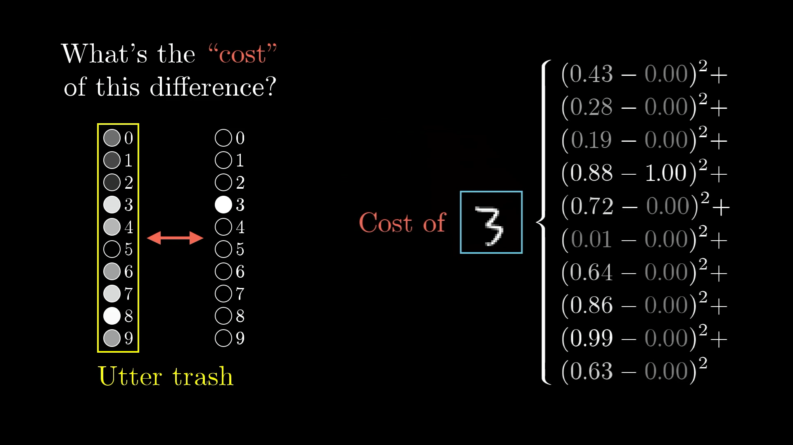
📊 Understanding the Cost Function
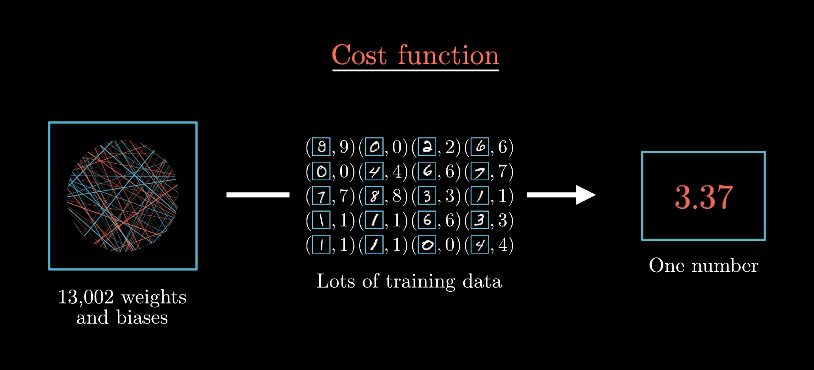
Think of it this way: The cost function is like a report card. It takes all 13,002 weights and biases as input, tests them on thousands of training examples, and gives back a single number: "How bad is this network?"
A low cost means the network is doing well. A high cost means it's making lots of mistakes.
🎯 Interactive Question
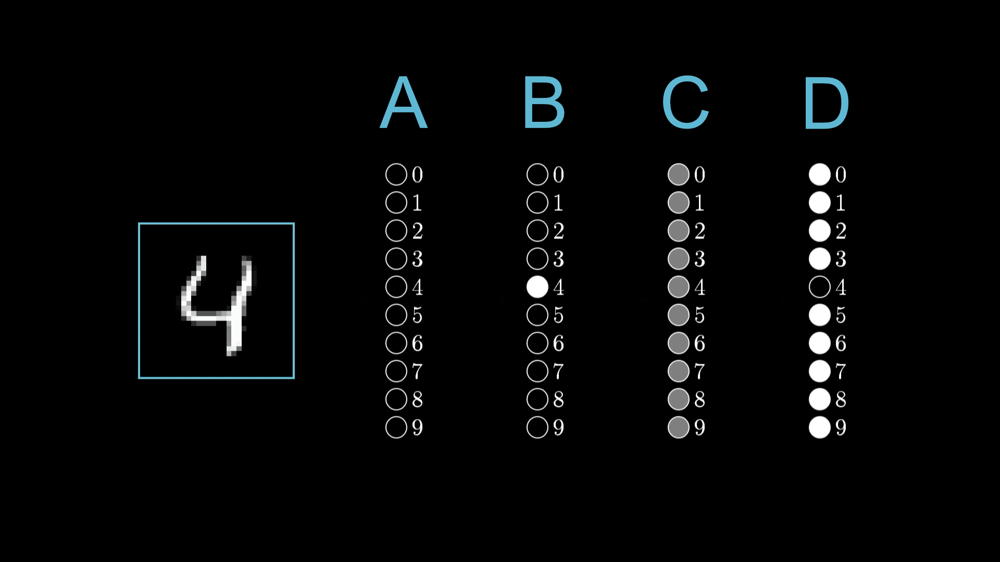
Can you rank these outputs from highest cost to lowest cost for classifying a "4"?
Answer: B > A > C > D
B is worst (confident about wrong answer), D is best (confident about right answer)
⬇️ The Minimization Challenge
Now we have a clear goal: Find the values of our 13,002 parameters that minimize the cost function.
Let's Start Simple
Imagine we only have ONE parameter to optimize. Our cost function would look like a simple curve, and we want to find its minimum.
For very simple functions, we could solve this mathematically (find where slope = 0).
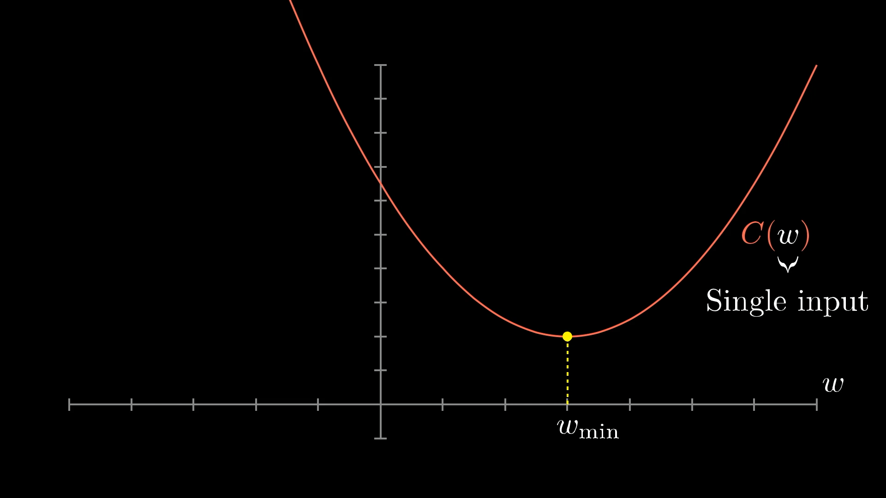
But with 13,002 dimensions, direct calculation is impossible! We need a smarter approach.
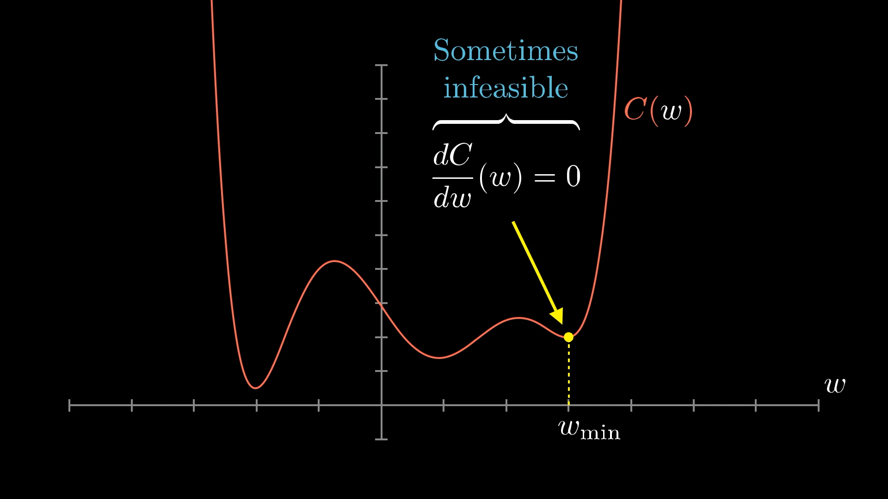
🏔️ Enter Gradient Descent: Rolling Downhill
The Big Idea: If we can't solve for the minimum directly, let's just roll downhill like a ball!
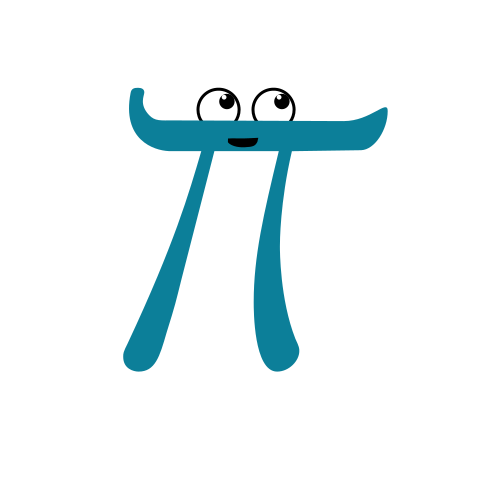
The Algorithm (1D version)
Start at a random point
Check the slope:
If slope is positive → move left
If slope is negative → move right
Take a small step in that direction
Repeat until you reach the bottom!
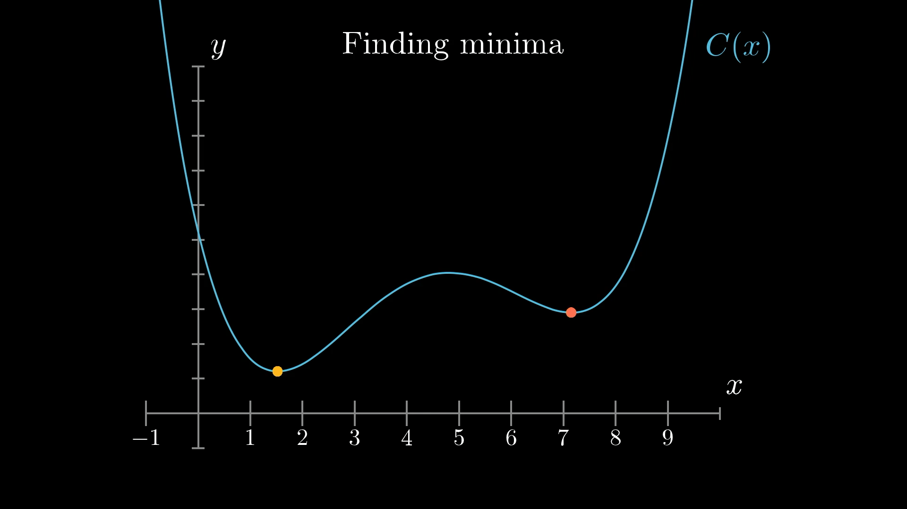
🗺️ Scaling Up: Two Dimensions
Now imagine our cost function has two inputs instead of one. We can visualize this as a landscape with hills and valleys.
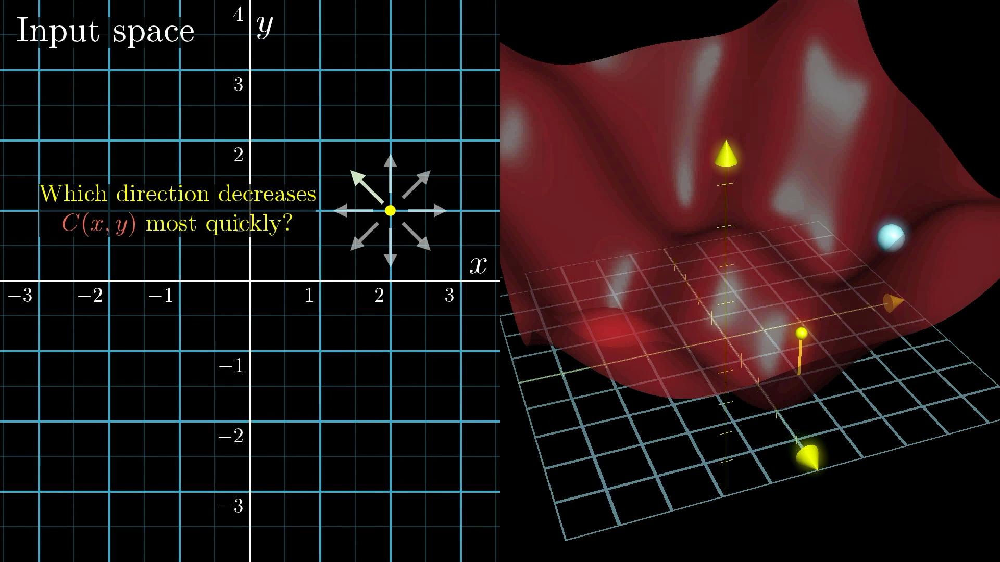
The Gradient Vector
In multiple dimensions, "slope" becomes a vector called the gradient.
The gradient points in the direction of steepest ascent, so the negative gradient points downhill!
Gradient Descent Algorithm:
1. Compute the gradient ∇C
2. Move in the opposite direction: -η∇C
3. Repeat until convergence
Learning Rate (η): This controls how big steps we take. Too small = slow learning. Too big = we might overshoot and oscillate around the minimum!
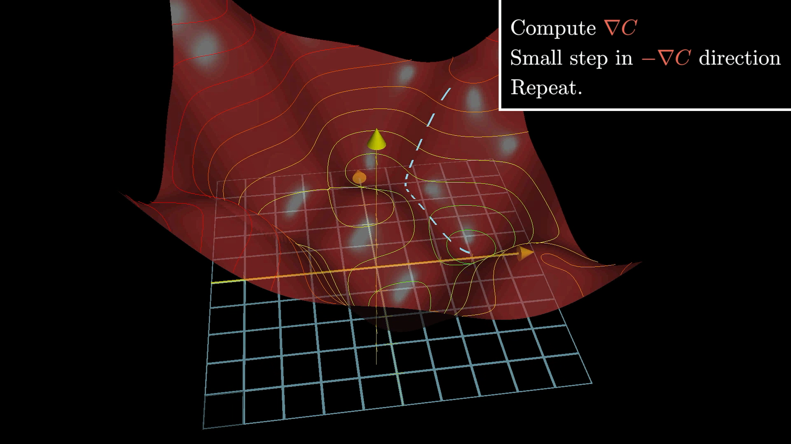
🌌 Thinking in 13,002 Dimensions
The same principle works in our actual problem with 13,002 dimensions, even though we can't visualize it!
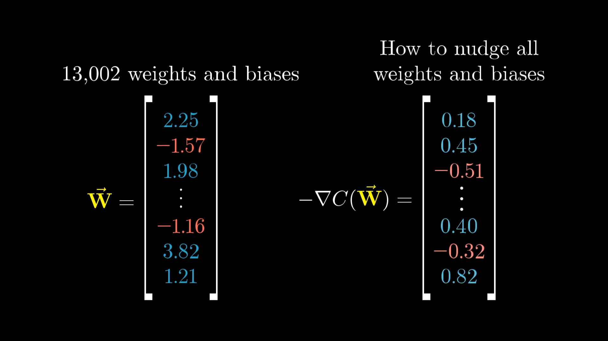
Vector Perspective
Think of all weights and biases as one giant vector with 13,002 components.
The gradient is also a vector with 13,002 components, telling us how to nudge each parameter.
What the gradient tells us:
Direction: Should this weight increase or decrease?
Magnitude: How important is changing this particular weight?
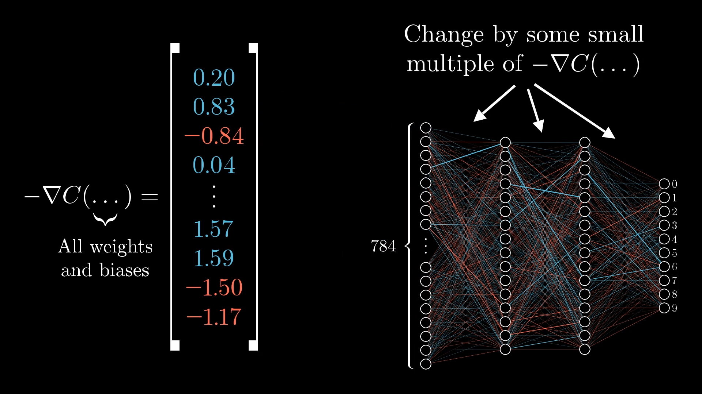
⚖️ Not All Weights Are Created Equal
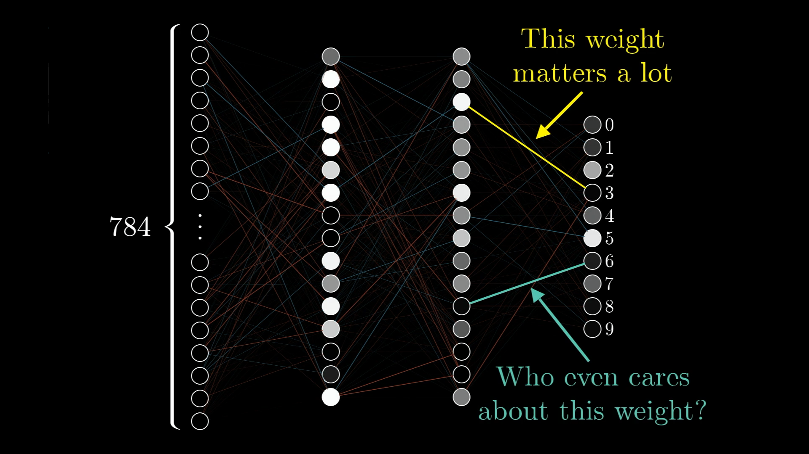
Some connections in our network have a much bigger impact on the final result than others. The gradient naturally encodes this importance!
High Gradient Component
Large change in cost function
→ This weight really matters!
→ Make a bigger adjustment
Low Gradient Component
Small change in cost function
→ This weight doesn't matter much
→ Make a smaller adjustment
The gradient automatically tells us which changes will give us the "biggest bang for our buck"!
🏋️ The Training Process in Action
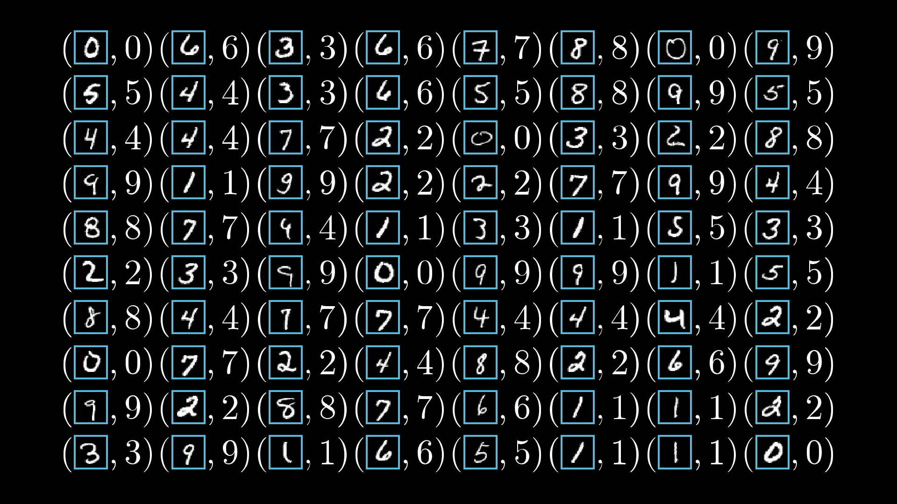
Step by Step:
Feed training data through the network
Calculate the cost (how wrong were we?)
Compute the gradient (which way is downhill?)
Update all weights and biases (take a step downhill)
Repeat with more training data
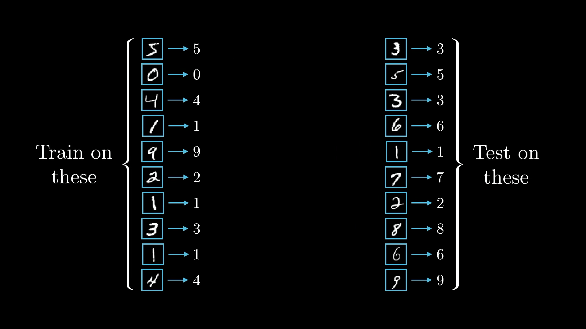
The Ultimate Test: After training, we test the network on completely new data it has never seen before. If it performs well, it has truly "learned"!
🔮 What's Coming Next: Backpropagation
We've learned what gradient descent does, but how do we actually compute that gradient for a neural network?
That's where Backpropagation comes in!
The ingenious algorithm that efficiently calculates gradients in neural networks.
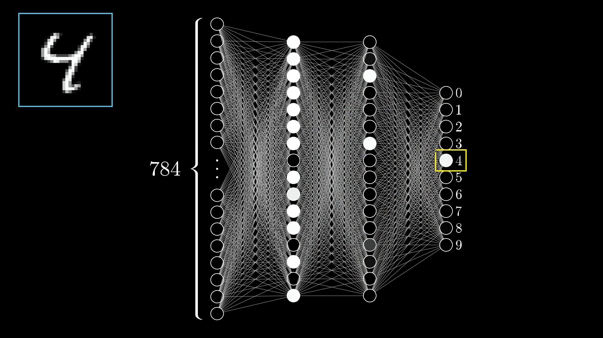
Preview: Backpropagation works by starting from the output error and propagating it backwards through the network, computing how much each weight contributed to the mistake.
But that's a story for our next lesson! 📚
🎓 Key Takeaways
🧠 Learning = Optimization
Neural network learning is really just finding the best values for thousands of parameters by minimizing a cost function.
🏔️ Gradient Descent
Like rolling a ball downhill
Follow the negative gradient
Take small steps iteratively
Eventually reach a minimum
📊 The Gradient Vector
Shows direction of steepest ascent
Magnitude indicates importance
Guides parameter updates
Computed via backpropagation
🚀 The Journey Continues...
Next up: Backpropagation - the algorithm that makes it all possible!
.png)
.jpg)